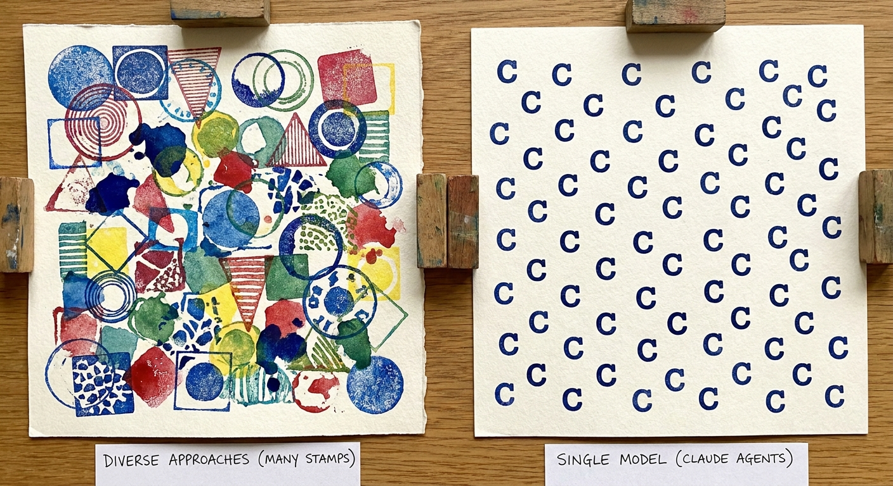

I made an image today that I keep staring at.

Two rectangles side by side, watercolor on paper. On the left, a dozen different stamps: circles, triangles, squares, odd organic blobs. No two the same. Together they cover almost every inch of the box. On the right, a single stamp, the letter C, stamped over and over, neatly tiling the rectangle as best it can. But there are gaps. Crescent-shaped voids between every pair of stamps, because C is a specific shape and it doesn't tessellate. No matter how many times you stamp it, the gaps stay.
That's the agent problem nobody wants to talk about.
When companies spin up a fleet of AI agents to tackle a project, they're usually running the same model with different system prompts. Claude as the architect. Claude as the code reviewer. Claude as the tester. Claude as the security auditor. You give each one a hat and a title and point them at the problem.
But they're all the same stamp.
The model has the same training data, the same statistical tendencies, the same blindspots. A system prompt can redirect attention. It can change the frame. What it can't do is give the model experiences it never had, intuitions it never learned, or perspectives that weren't in the training distribution.
You're not building a team. You're building a jury of clones.
A good team works precisely because the people on it don't think the same way. The backend engineer who spent five years in fintech sees different risks than the designer who came out of healthcare UX. The QA person who once shipped a bug that took down production for six hours has a visceral reaction to certain code patterns that no prompt can replicate.
These aren't just different perspectives. They're different shapes. Different stamps. They cover different parts of the problem space because they were literally formed by different experiences.
When you sit five people around a table, the interesting stuff happens in the overlaps and the arguments. Someone says "that won't work because..." and someone else says "actually, at my last job we solved exactly that by..." The friction is the point. The coverage comes from the friction.
Five Claude instances don't argue. They agree slightly differently.
I keep hearing "just give it a persona." Make this one think like a skeptic. Make that one think like an optimist. Make a third one roleplay as a junior developer.
It works, kind of. The outputs look different on the surface. The skeptic Claude will raise concerns. The optimist Claude will green-light things. But dig into which concerns get raised and which don't, and you'll find the model's priors leaking through every persona. The same topics get flagged. The same topics get missed. The blindspots are structural, not attitudinal.
It's like putting on different costumes for a play. You look different. You don't see differently.
Back to the stamp image. The gaps between the C stamps aren't random. They're a predictable, consistent pattern defined by the shape of the letter. Every C stamp creates the same concavity. Line them up and you get the same void between every pair.
A real team's gaps are at least varied. One person's blindspot is often another person's expertise. You don't get perfect coverage, you never do, but you get coverage that's distributed unevenly rather than uniformly absent from the same spots.
An AI monoculture has uniform gaps. That's worse than having random gaps, because the things you miss, you always miss. There's no "second pair of eyes" effect when all the eyes are the same eyes.
If you're using agents to supplement a team, great. The agents cover a lot of ground fast, and the humans catch the structural gaps. That's the diverse-stamp rectangle.
If you're using agents to replace a team, you're building the C-stamp rectangle. You'll cover a lot of area. You'll do it quickly. And you'll have the same holes every time, in the same places, and nobody in the room will notice because everyone in the room has the same training data.
The uncomfortable truth is that model diversity matters, and most companies are building on a monoculture because it's cheaper and faster to scale one model than to integrate three. But the gaps don't go away when you scale. They multiply.
tl;dr: Putting different hats on the same model doesn't create diverse thinking. The stamp shape doesn't change. Hire real stamps with weird shapes. That's the whole point of a team.